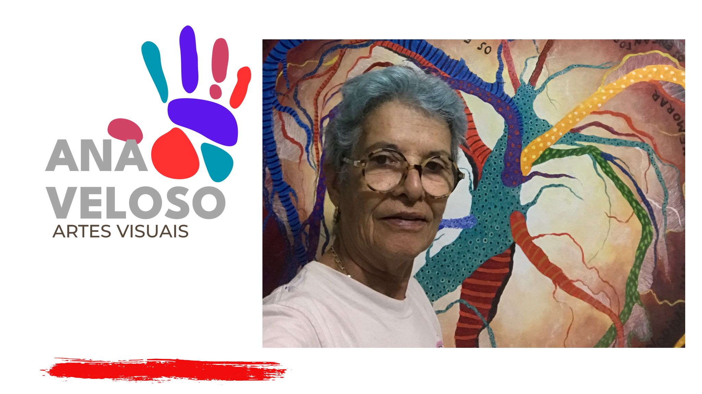
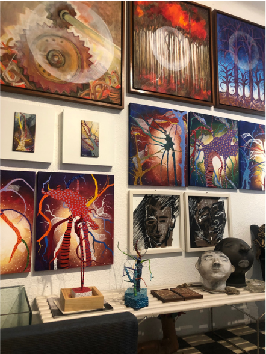
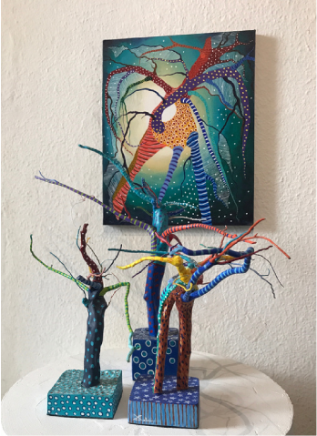
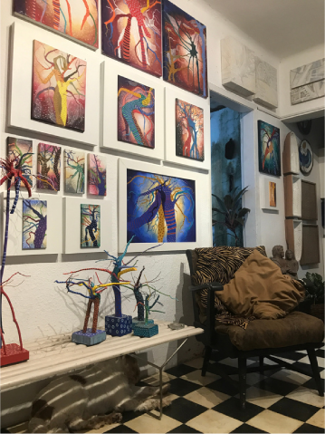
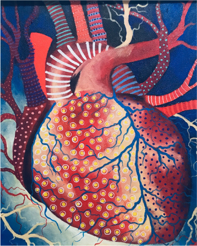
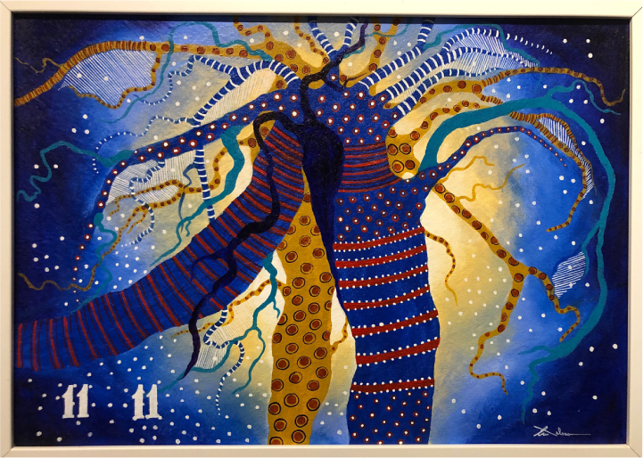

Uma Poética Curricular

Minha trajetória na arte nasce do olhar atento ao cotidiano e da necessidade de traduzir o mundo em formas, cores e estruturas. Pinto como quem organiza o caos: linhas, geometrias e planos constroem paisagens internas e revelam fragmentos do tempo em que habito. Meu trabalho atravessa ruas, feiras, festas populares, portos, máquinas e giros. Interesso-me pelo encontro entre o rigor da forma e a pulsação do acaso — uma geometria sensível, por vezes dura, por vezes lírica, sempre humana. O ferro, a roda, o barraco, o brinquedo, o cais: tudo se transforma em campo pictórico, onde a memória coletiva dialoga com minha experiência pessoal. Cada série é um mergulho; cada obra, um fio que sustenta o prazer de criar e a urgência de dizer. Ao longo do meu percurso, aprimorei técnicas, revi tempos, atravessei mudanças e compreendi que minha arte se constrói no diálogo com o outro e com a cidade. Pinto para me entender e para tornar visível o que, muitas vezes, insistimos em não ver. O engasgo. Uma inquietação em criar mudanças que atravessa o corpo antes de chegar à forma. Ao rever minha trajetória artística, consigo, enfim, compreender-me. Reconheço os caminhos, os desvios e os silêncios que também pintaram comigo. Foram tempos de variadas Anas — a que hesita, a que rompe, a que insiste. Cada uma deixando marcas, cores sobrepostas de um mesmo existir. É nesse universo da arte que me compreendo, ao mesmo tempo em que aprendo a entender o outro. Porque olhar para fora é, também, um exercício profundo de olhar para dentro. Quando comecei a pintar, não buscava respostas; buscava fôlego. E foi na cor que o engasgo expressou as formas.
AQUI EU CONTO
Aqui começo a relatar o doce e amargo percurso da minha vida como pintora.
Sou autodidata.
Creio ter nascido com esse defeito, com esse dom — ou talvez com essa inquietação.
Meu primeiro professor de desenho foi um flamboyant.
Ainda menina, perdia-me no tempo, sentada na varanda da casa onde morava, no bairro do Parnamirim.
Com um bloco de desenho na mão, rabiscava o emaranhado de seus galhos.
Foi ali que aprendi a perceber o que estava à frente e o que se escondia atrás; o claro e o escuro, as mudanças das cores ao longo do dia.
Minha arte é pura intuição.
Assim como o flamboyant foi meu primeiro mestre, também fujo das regras: pinto o que me toca.
Pesquiso e disseco formas e fatos que me emocionam, que me apaixonam — e, em releitura, busco neles a expressão da minha própria linguagem plástica.
E assim me descubro artista.



